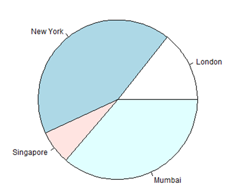
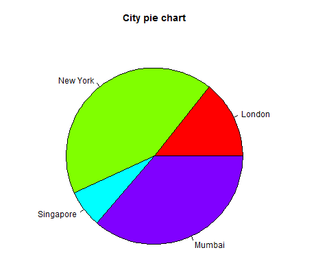
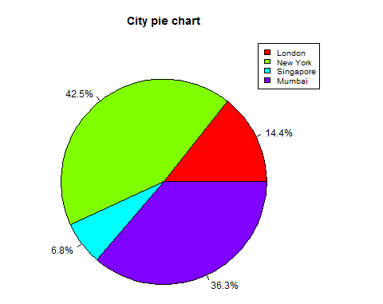
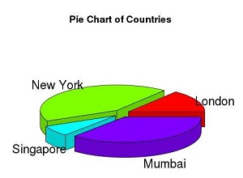

R Programming language has numerous libraries to create charts and graphs. A pie-chart is a representation of values as slices of a circle with different colors. The slices are labeled and the numbers corresponding to each slice is also represented in the chart.
In R the pie chart is created using the pie() function which takes positive numbers as a vector input. The additional parameters are used to control labels, color, title etc.
Syntax
The basic syntax for creating a pie-chart using the R is
pie(x, labels, radius, main, col, clockwise)
Following is the description of the parameters used −
1. x is a vector containing the numeric values used in the pie chart.
2. labels is used to give description to the slices.
3. radius indicates the radius of the circle of the pie chart.(value between −1 and +1).
4. main indicates the title of the chart.
5. col indicates the color palette.
6. clockwise is a logical value indicating if the slices are drawn clockwise or anti clockwise.
Example
A very simple pie-chart is created using just the input vector and labels. The below script will create and save the pie chart in the current R working directory.
# Create data for the graph.
x <- c(21, 62, 10, 53)
labels <- c("London", "New York", "Singapore", "Mumbai")
# Give the chart file a name.
png(file = "city.jpg")
# Plot the chart.
pie(x,labels)
# Save the file.
dev.off()
When we execute the above code, it produces the following result

1. Pie Chart Title and Colors
We can expand the features of the chart by adding more parameters to the function. We will use parameter main to add a title to the chart and another parameter is col which will make use of rainbow colour pallet while drawing the chart. The length of the pallet should be same as the number of values we have for the chart. Hence we use length(x).
Example
The below script will create and save the pie chart in the current R working directory.
# Create data for the graph.
x <- c(21, 62, 10, 53)
labels <- c("London", "New York", "Singapore", "Mumbai")
# Give the chart file a name.
png(file = "city_title_colours.jpg")
# Plot the chart with title and rainbow color pallet.
pie(x, labels, main = "City pie chart", col = rainbow(length(x)))
# Save the file.
dev.off()
When we execute the above code, it produces the following result

2. Slice Percentages and Chart Legend
We can add slice percentage and a chart legend by creating additional chart variables.
# Create data for the graph.
x <- c(21, 62, 10,53)
labels <- c("London","New York","Singapore","Mumbai")
piepercent<- round(100*x/sum(x), 1)
# Give the chart file a name.
png(file = "city_percentage_legends.jpg")
# Plot the chart.
pie(x, labels = piepercent, main = "City pie chart",col = rainbow(length(x)))
legend("topright", c("London","New York","Singapore","Mumbai"), cex = 0.8,
fill = rainbow(length(x)))
# Save the file.
dev.off()
When we execute the above code, it produces the following result −

3. 3D Pie Chart
A pie chart with 3 dimensions can be drawn using additional packages. The package plotrix has a function called pie3D() that is used for this.
# Get the library.
library(plotrix)
# Create data for the graph.
x <- c(21, 62, 10,53)
lbl <- c("London","New York","Singapore","Mumbai")
# Give the chart file a name.
png(file = "3d_pie_chart.jpg")
# Plot the chart.
pie3D(x,labels = lbl,explode = 0.1, main = "Pie Chart of Countries ")
# Save the file.
dev.off()
When we execute the above code, it produces the following result −
